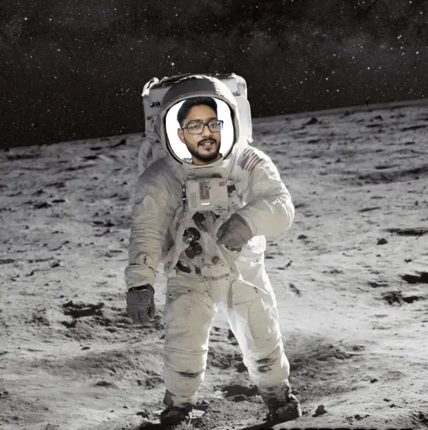

(My webpage is best viewed on Desktop Site!)
INTRO
 I come from a small town, Contai, near the coast of Bay of Bengal, on Planet Earth. I completed my high school education from Contai Public School. And then moved to Kolkata for my University Education.
Since my childhood, I am fascinated by the stars, planets and moons. While others dreamt of earthly adventures, I gazed at the stars, planets, and moons, yearning to become an interstellar traveller. During my early days in school, watching Mr. Armstrong stepping on the Moon back in the 1960s, I wished to be one of the Guardians of the Galaxy when I grow up. Well, as an adult now, I found it's not possible yet. I got passionate to lay the founding stone one day. Maybe I would not be able to travel through the space, but upcoming generations would. But inspiration doesn't reside solely in the realm of science. For me, it springs from the boundless imagination of science fiction. Like many, the epic science fiction film 'Interstellar' directed by Christopher Nolan touched my soul and set my course in the cosmos.
Now, my passion and purpose converge in the realm of extra-solar planets. In the quest for habitable worlds, I search for new homes beyond our solar system. Search for Habitable Planets is one of my greatest goal. Inspiration can come from anywhere and for me, its Sci-Fi movies. I am one of the biggest consumer of Sci-Fi movies.
When I'm not charting the course to distant planets, I'm navigating the winding paths of our own planet. Cycling through the unknown and exploring uncharted territories is my way of 'Exploring Earth!' Welcome to my cosmic corner of the web, where curiosity knows no bounds, and the journey to the planets is just beginning.